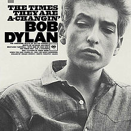

The Times They Are A-Changin'

Released: January 13, 1964
Length: 45:36
Producer: Tom Wilson
Label: Columbia
Side 1
The Times They Are A-Changin'
Ballad of Hollis Brown
With God on Our Side
One Too Many Mornings
North Country Blues
Side 2
Only a Pawn in Their Game
Boots of Spanish Leather
When the Ship Comes In
The Lonesome Death of Hattie Carroll
Restless Farewell
Home